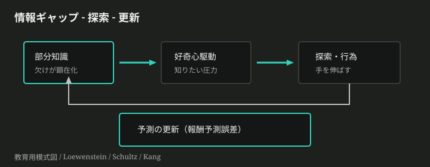
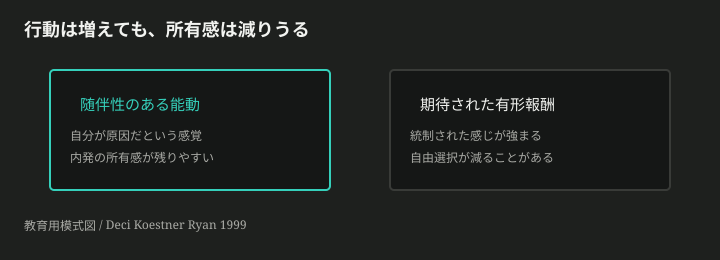
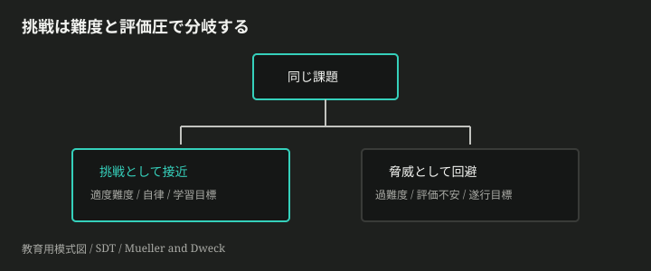
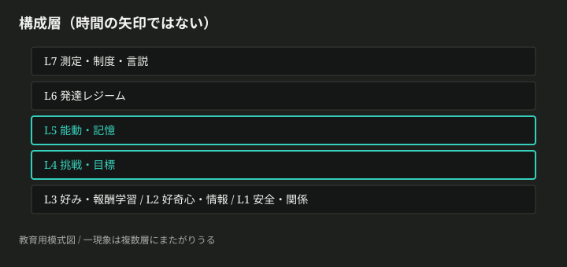
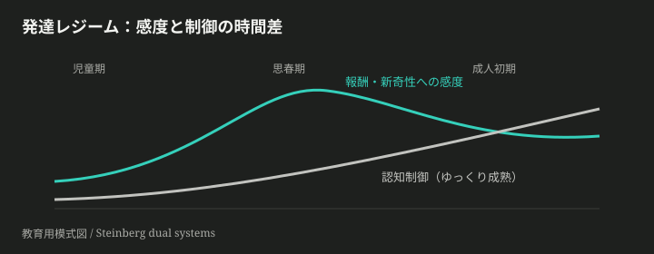

「何事にも興味を持ち、チャレンジできる子に」——願いははっきりしている。なのに処方箋はぶつかる。褒めて伸ばせと、甘やかすな。早期にドリルを、と遊びを守れ。好きなことをさせろと、勉強は習慣だ。同じ子どもの頭の中で、好奇心・好き嫌い・挑戦・手を動かす学び・「勉強が身になる」感覚は、どこで分かれ、どこでくっつくのか。スローガンだけでは見えない。
ここで失うのは、正解の育児マニュアルではない。流行の言説に、子どもがいま解いている問題をすり替えてしまうことだ。何が発達の制約で、何が測定の争い、何が価値判断かを分けられないと、「良い親／悪い親」の物語に主体性を奪われる。
この記事は、推奨スタックを渡さない。脳と行動が解いている問題の列を辿り、世の主張を分解し、問いで終わる。
理解の道筋は、次の問題の列だけにする。
- なぜ神経系は、安全でもない未知へ手を伸ばすのか。
- 「好き」や関心は、どう固まっていくのか。
- 挑戦は、いつ快になり、いつ脅威になるのか。
- なぜ「見る」より「手が動く」学びが残りやすいのか。
- 年齢とともに何が変わり、何が変わらないのか。
- 「勉強が身になるとうれしい」は、世のどんな主張とすれ違うのか。
完成した「理想の子ども像」は入口に置かない。先に置くのは、摩擦だけだ。
未知の部屋に子どもを置く。玩具はある。だが知らない大人が立っている。手は伸びるだろうか。多くの場合、まず戻る先を探す。戻れる感覚があるとき、視線と身体が外へ開く。興味の話は、能力の話の前に、脅威と接近の両立の話である。
安全基地
アタッチメント研究が固定した見取り図はこうだ。養育者は安全基地になりうる——不安が高まれば帰投し、落ち着ければまた探索する。Bowlby と Ainsworth の枠では、安心と探索は対立しない。安心があるから探索が起動する(*1)。
ここで誤解しやすい。「安全＝過保護で正解」でも「放任すれば好奇心が育つ」でもない。問題は、未知が脅威として残るときに接近コストが跳ね上がることだ。安心が薄いと、世界ではなく対人の監視に注意が吸われる。興味の対象以前に、生存側の問題が前景になる。
安全があっても、次の問題が残る。何を知りたいのかが定まらない。
情報ギャップ
Loewenstein は好奇心を、知識の情報ギャップが顕在化したときの認知的な欠乏感として読み直した(*2)。完全に知らない対象より、少し知っている対象のほうが、「欠け」が問いになりやすい。ギャップが自分の問いとして立ち上がると、埋めたい圧力が生まれる。
だから「刺激をたくさん浴びせれば好奇心が育つ」とは限らない。刺激が多くても、問いが立たなければギャップは開かない。逆に、答えを先に全部渡すと、ギャップは閉じる。部分知識と未解決の問い——この帯が、興味の点火点になりやすい。
シミュレーションを開く — 部分知識があるとき、情報ギャップ駆動の接近が強まりやすい
報酬予測誤差
では、ギャップを埋めに行く行為は、神経系でどう学習されるか。ここでの第一原理は「快楽物質が噴く」ではない。報酬予測誤差——予想より良い／悪い結果が、次の予測を更新する信号になる、という枠だ(*3)。予想外にうまくいった接近は、次も手を伸ばしやすくする。予想通りなら学習は小さい。外れれば避ける側へ寄る。
好奇心の脳研究は、この報酬系と記憶系の接続を見せている。Kang らは、トリビアへの好奇心が高いほど尾状核の活動が上がり、驚きの答えの記憶が残りやすいことを示した(*4)。Gruber らは、高好奇心状態で中脳と海馬のつながりが強まり、知りたい本体だけでなく、その前後の偶発情報まで記憶が持ち上がることを報告した(*5)。内発の「知りたい」は、外発の報酬と完全に別世界ではなく、似た回路を借りて学習を後押ししうる。

得たものは大きい。興味の点火を、性格の一点説明から外し、安全・問い・予測更新の問題として扱える。失うものもある。成人のトリビア課題を、乳児の遊びにそのまま当てはめる根拠はまだ薄い。機構の仮説と、年齢妥当性は分ける。
興味の点火は、安全のなかで欠けが自分の問いになるときに起きる。だがギャップを埋めた快は、そのままだと「好き」としては残らないことがある。
一度「知りたい」が点火しても、翌日同じ対象に手が伸びるとは限らない。好奇心はしばしば鋭く、そして短い。では、何が「好き」や関心として残るのか。
随伴性と所有感
残る側の最小条件は、行為と結果が自分に属している感覚——随伴性だ。押したら鳴る。組み立てたら立つ。自分の操作が世界を変えた、という更新が繰り返されると、対象は「外から与えられた刺激」から「自分が関われる領域」へ移る。予測誤差の学習は、この反復のなかで好みの勾配を作る。
Self-Determination Theory（SDT）は、ここに心理的な必要条件を重ねる。人が活動を自分のものとして続けるには、自律・有能・関係性の支えが要る、という枠だ(*6)。興味の話を「報酬を足せば動く」だけに落とすと、所有感——内発の質——が視界から消える。
期待された有形報酬
現場でよく起きる副作用がある。もともと面白かった活動に、期待された有形のご褒美を載せる。短期の行動は増えることがある。だが自由に選ぶ時間や、自己報告の興味が下がる、という実験群がある。Deci, Koestner, Ryan のメタ分析では、従事・完了・成績に条件付けられた報酬が、自由選択の内発動機を有意に下げた（効果量の目安 d ≈ −0.28〜−0.40）。一方、情報的な肯定フィードバックは上げうる(*7)。
重要なのは「報酬＝悪」ではない。退屈で起動しない課題を、外から動かす話と、すでに火がついている興味の所有感を守る話は、別問題になりうる。混同すると、シールとポイントが万能スイッチに見える。

得たもの：好きの凝固を、性格や才能の物語から、随伴性と動機の質の問題へ移せる。失うもの：ご褒美で教室を回す単純な運用の安心。適用範囲は狭い。もともと興味がある活動への、期待された有形報酬——ここが最も傷つきやすい帯だ。
好きは、自分が原因だと感じられる予測更新の反復で固まる。では挑戦は、いつ快になり、いつ脅威になるのか。
同じ算数の問題を前に、ある子は前のめりになり、ある子は目を逸らす。難度が違うのか。評価の空気が違うのか。それとも「頭がいいね」と言われた記憶が違うのか。挑戦意欲は、気合の総量というより、分岐の設計問題に近い。
適度難度と自律支援
SDT の有能感は、「勝った／負けた」のラベルではない。手が届きそうで、まだ完全ではない帯——適度難度——で、自分が効いている感覚が立つときに支えられる(*8)。易しすぎれば更新が起きない。難しすぎれば脅威になる。さらに、やらされ感が強いと、同じ難度でも自律が削れ、接近が回避へ傾く。
ここでの競合解は「とにかく難しくすれば伸びる」ではない。難度は必要だが、自律と関係性の支えなしに難度だけを上げると、挑戦ではなく評価恐怖が前景になりうる。
学習目標と遂行目標
褒め方は、この分岐を動かす。Mueller と Dweck は、小学五年生への知能褒めと努力褒めを比較した。知能を褒められた子どもは、遂行（できているように見えること）を優先し、失敗後の持続・楽しさ・成績が落ちやすかった。努力（過程）を褒められた子どもは、学習側の目標に寄り、失敗後も挑戦を選びやすかった(*9)。
これは「努力という言葉を唱えればよい」という呪文化の許可ではない。過程の中身——どの戦略を試したか、どこで予測が外れたか——が空だと、努力褒めも空虚になる。知能褒め経路は、有能さの証明を守るために難度を避ける、という別解だ。同じ「やる気を出させたい」問題への競合解として並ぶ。

得たもの：挑戦を性格の有無から、難度と評価の設計へ移せる。失うもの：万能の褒め言葉。適用は、課題選択が少しでも効く場面で強い。強制カリキュラムでは、圧力の形が教室の評価制度側へ移る。
挑戦意欲は気合ではなく、難度と評価の設計で分岐する。だが挑戦を選んでも、見るだけでは身になりにくいことがある。
授業のあと「分かった」気がする。なのに一週間後、使えない。逆に、手こずって組み立てた工作は、手順が体に残る。親がうれしいと思う「勉強が身になる」感覚は、しばしばその場のスムーズさではなく、遅れて効く保持の側にある。
望ましい困難
Bjork らは、学習中のできを良く見せる条件と、あとで思い出せる条件がずれることを強調した。間隔を空ける、自分で生成する、テストとして思い出す——こうした操作は、その場の流暢さを下げても長期保持を上げることがある。これを望ましい困難と呼ぶ(*10)。ただし、学習者が乗り越えられない困難は望ましくない。生成できる事前知識がないのに「自分で出せ」は、ただの不能である。
「手を動かす」の核は、筋肉のロマンではない。答えや手順を外から受け取る代わりに、自分の側で生成・検索・試行の痕跡を残すことだ。見るだけの符号化は軽いが、あとで引き出す手がかりが薄い。
能動学習と好奇心状態
学部STEMの大規模メタ分析では、講義中心より能動学習のほうが試験成績が高く（約 +0.47 SD）、落第オッズも講義側で高かった(*11)。対象年齢は子どもではない。それでも「行為を伴う符号化」が、受動より残りやすいという方向は、望ましい困難と整合する。幼児の遊びや工作は、同じ層——能動・記憶——の別実装として読める。
前章までの好奇心状態は、ここに接続する。高好奇心のときに記憶系が持ち上がるなら、「知りたい」まま手を動かす帯は、ただの楽しさ以上に、残る学習の条件になりうる。逆に、スムーズに見せるだけの授業は、今できた感を増やし、身になる感を減らすことがある。
得たもの：身になるを、根性や時間の総量から、符号化と検索の設計へ移せる。失うもの：きれいな進度表の安心。適用範囲は、生成可能な事前知識がある課題に限る。ドリルが常に悪でも、探究が常に善でもない。何を測るかで結論が割れる。
「身になる」は、適度に手間のかかる能動のなかで起きる。では年齢とともに、同じ能動・同じ挑戦の意味はどう変わるのか。
新しい子育て言説が来る。「好奇心を育てる習い事」「挑戦力プログラム」「脳トレで集中」。名前は新しいのに、どの問題の話かが混ざる。ここで地図が要る。
教育用ツリーは近似である。厳密には、一つの現象は複数の層に同時に属しうる。以下の図は構成（いまどこか）であり、歴史の矢印ではない。

三つの軸
新しい主張を見たら、次の三軸で置く（複数所属可）。
| 軸 | 問い |
|---|---|
| 系譜 | 安全基地／好奇心／報酬学習／挑戦設計／能動記憶のどれから来たか |
| 層 | 関係・情報・好み・挑戦・能動・発達・言説のどこを動かそうとしているか |
| 圧力 | 脅威回避、情報ギャップ、外発統制、評価不安、短期成績、発達ギャップのどれを解こうとしているか |
診断の型
- 三軸で置く。
- 構成層で主位置を一つ選ぶ（副は可）。
- 導出梯子で、直前のどの問題の副作用かを一文で言う。
- 効果を語る前に、測定対象（行動／主観／成績／神経）を言う。
EX-place
入力: 「小学校低学年向け：毎日の宿題クリアでポイントが貯まり、景品と交換できるアプリ。早期に学習習慣が身につく、と広告されている。」
操作: 系譜／層／圧力を置き、構成層の主位置を選び、導出梯子上で副作用になりうる直前問題を一文で書く。
自己チェック: 製品の是非で終わっていないか。著者の推奨を書いていないか。層と圧力が言えているか。
地図は、正解を出す機械ではない。混線を減らす操作盤だ。発達で制約が変わると、この盤のどこが伸び縮みするかが次の問題になる。
同じ「挑戦させろ」が、五歳と十五歳で別の圧力になる。変わるのは、やる気の総量というより、制約の形だ。
二重系の時間差
思春期の意思決定研究では、報酬・新奇性・社会的文脈への感度が比較的早く高まり、衝動を抑える認知制御側の成熟がゆっくり続く、という二重系の見取り図が影響力を持った(*12)。時間差の帯では、挑戦やリスクが「学習の快」にも「制御不足の突出」にも読める。単純な「理性がない」物語は誤りに近い。感度と制御のスケジュールがずれる、という制約の話である。再評価論文も、単純化への注意を残しつつ、中核の時間差は支持しうるとしている(*13)。

児童期でも制約は別形だ。注意の持続、言語化、評価の社会的意味が変わる。だから「好奇心を刺激するコンテンツ」は、年齢によって L2（情報ギャップ）ではなく L7（刺激消費の言説）だけを動かしていることがある。
残存の未知（Frontier）
三つだけ、残る未知をカードにする。
幼児への神経知見の外挿
成人トリビアの好奇心–海馬知見を、乳幼児の遊びにそのまま当てはめたい誘惑がある。候補は、慎重な類推・行動指標優先・年齢別再検証。証拠はまだ薄い。得たもの：機構仮説。失うもの：年齢妥当性。
マインドセット介入の条件付き効果
平均効果は小さい、というメタ分析がある一方、リスク群などで条件付き効果を読む立場もある。万能特効薬としては置けない。詳細は次章の Claim へ。
デジタル刺激と探索の質
刺激が多い＝好奇心が育つ、と同一視したい誘惑がある。L2（問いが立つか）と L5（生成があるか）で分解するのが先で、単一決定的な結論はまだ薄い。
発達で変わるのは、やる気の総量より、制約と圧力の形である。世のスローガンは、そのどこをいじっているのか——分解へ渡す。
ここまでの構造を使って、世に出ているスローガンを分解する。著者の正解スタックは置かない。各カードは、事実／争点／測定／隠れた価値に開く材料である。
Claim Inventory
C1 — 成長マインドセットを教えれば成績が伸びる
- 誰の利害か: 教育介入製品、一部研究・政策コミュニティ
- 共通事実: 知能観への介入研究は多数ある
- 争点: 平均効果の大きさ、誰に・どの文脈で効くか
- 測定: 成績・GPA・信念の自己報告
- 隠れた価値: 安価介入で格差や粘りを埋めたい
- 出典: Sisk らのメタ分析では、マインドセットと成績の相関は弱く（r ≈ .10）、介入効果も平均小さい（d ≈ .08）。低SESや学業リスク群で条件付きの余地が議論される(*14)
C2 — ご褒美で勉強させればやる気が出る
- 誰の利害か: 家庭・教室の管理しやすさ、インセンティブ設計
- 共通事実: 報酬は行動頻度を上げうる
- 争点: 内発の自由選択・興味を削ぐ条件があるか
- 測定: 自由選択時間、興味の自己報告、課題従事
- 隠れた価値: すぐ動かすこと／可視化された管理
- 出典: Deci ら 1999（期待された有形報酬の undermining）
C3 — 知能を褒めて自己肯定感を育てよ
- 誰の利害か: ほめ文化、能力肯定の助言産業
- 共通事実: 肯定的な言葉は快い
- 争点: 失敗後の挑戦選択・持続を減らす経路があるか
- 測定: 課題選択、失敗後成績、能力の固定観
- 隠れた価値: 有能さの証明を守りたい
- 出典: Mueller & Dweck 1998
C4 — 早期ドリルこそ身になる／遊び探究だけが正解
- 誰の利害か: 早期教育市場 vs 遊び擁護
- 共通事実: 練習にも能動にも、それぞれ証拠がある
- 争点: 「身になる」を即時成績で見るか、遅延保持・転移で見るか
- 測定: 短期テスト vs 遅延再生・概念インベントリ
- 隠れた価値: 将来不安の先回り vs いまの主体性
- 出典: Bjork の望ましい困難、Freeman らの能動学習メタ（年齢外挿には注意）
EX-doubt
入力: Claim C1「成長マインドセットを教えれば成績が伸びる」
操作: 共通事実／争点／測定／隠れた価値のうち、いちばん怪しい点と足りない証拠を書く。
自己チェック: 効果サイズや下位群条件に触れているか。全否定／全肯定で閉じていないか。
主張は、推奨ではなく分解の材料である。分解したあと、自分はどの問いに残るか——次へ渡す。
記事はここで、完成した育児モデルを渡さない。構造と主張の分解までが仕事で、結晶化は対話の側にある。次の問いから一つ選び、自分の観察や反論を添えてチャットを始めてほしい。
Provocation Pack
P1 — ご褒美の境界
- 錨: C2、好きが固まる段
- 思考の手: 境界
- 種: ご褒美が「起動」には効いて「所有感」には効かない境界は、自分の観察ではどこか。
P2 — 努力褒めの空回り
- 錨: C3、挑戦の分岐
- 思考の手: 反例
- 種: 「努力を褒めろ」が空回りした場面は？ 過程の中身が欠けていた可能性は。
P3 — 嫌がる宿題の地図
- 錨: C4、手を動かし身になる段
- 思考の手: 地図選択
- 種: 子どもの「嫌がる宿題」を、挑戦分岐の地図と望ましい困難の地図のどちらで読むか。両方なら、主はどちらか。
P4 — マインドセット研修の分解
- 錨: C1、発達レジーム
- 思考の手: 分解
- 種: マインドセット研修の提案を、事実／争点／測定／価値に分解すると何が残るか。
入口の願い——興味、挑戦、手を動かす学び、身になるうれしさ——は、ここまでの問題列のどこかに落ちる。落ちた場所が、次の対話の座標になる。